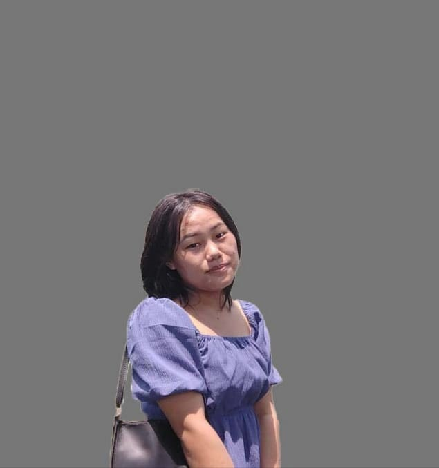

Welcome to my profile

About Newmai
Hey! I'm Wimasimliu Niumai ,currently a junior at Arena Animation ,GTB Nagar pursuing a diploma in graphic and web design.My studies have equipped me with a strong foundation in visual communication ,and i am proficient in tools such as Adobe Photoshop, Illustrator,Corel draw, and Indesign.
I am particularly passionate about user-centered design and enjoy exploring how design can enhance user experience and solve problems. My goal is to become a versatile designer who can adapt to various creative challenges and contribute to impactful projects.
Outside of my studies ,i love sketching and staying updated with design trends, which fuels my creativity and help me bring fresh ideas to my work.